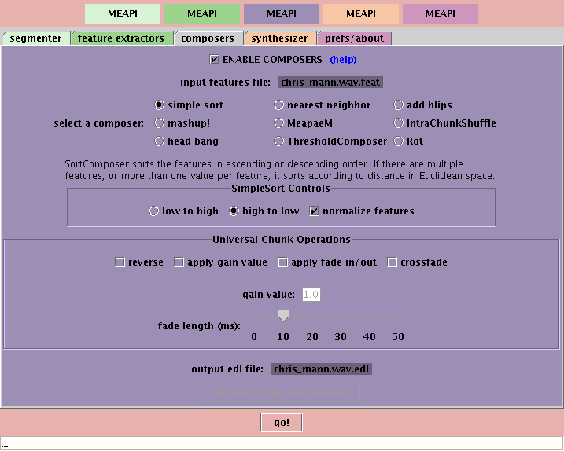

This page leads you through using MEAPsoft to rearrange an example file that comes with the package. We assume that you have downloaded the package, unpacked it, and run "make" on it (as appropriate for your machine).
For a more detailed description of the MEAPsoft components, see the MEAPsoft Manual.
We'll do a quick demonstration of how to process a soundfile using the Chris Mann speech file included with the MEAPsoft distribution. We'll analyze the pitch of each segment in the file and then sort those segments from low to high so that we get a nice speech glissando as our output file. Click on each panel name (in the bar near the top of the window) to adjust its settings.
| segmenter: chris_mann.wav should already be set as the input sound file. If not click on the "browse" button and locate it (or some other .wav file) on your file system. Set the "segment sensitivity" to its highest setting -- we want to grab as many small sounds as possible. Click on "detect events" -- since this is a soundfile of someone speaking, it doesn't make sense to try to extract tempo/beat information. Click "1st event = track start" -- we want to make sure that the very first sound in the file is counted as an event. | |
| feature extractors: we will sort the file by pitch, so make sure that only "AvgPitchSimple" is selected. | |
|  | composers: make sure that "simple sort" is selected. Click "low to high" so that the pitches are sorted from low to high. Click "apply fade in/out" and "crossfade" so that we get nice transitions between speech segments. Set the "fade length (ms)" to 10ms. |
| synthesizer: nothing to do here! Just click the "go!" button and wait for processing to complete. When it's finished, click the "listen" button or find the output sound file in your MEAPsoft/data directory. You should hear the speech sounds sorted by pitch. You can also click on the "launch visualizer" button to explore the data visually. | |
| visualizer: The "segment order" visualizer will open when you press "launch visualizer". At the top of the screen are the chunks from the original .feat file and on the bottom are the composed chunks in the .edl file). The pitch of each chunk is mapped to its color, and you can clearly see that the composed chunks have been sorted from high pitch to low. Click "select all" to see the connection between the .feat chunks and the .edl chunks.. |
{kind=link}
{kind=link}
{kind=link}
{kind=link}
{kind=link}